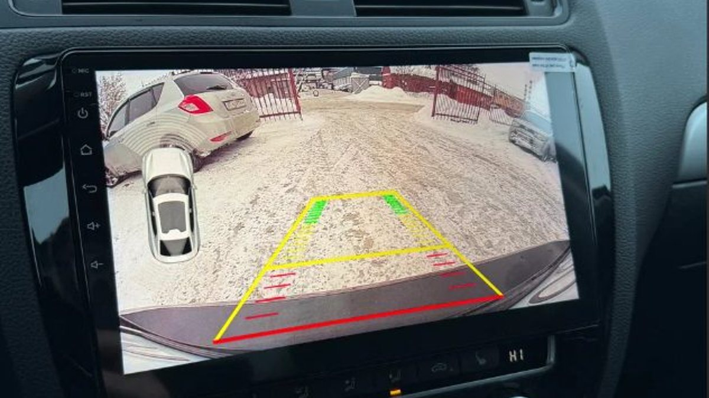

Половина седьмого вечера, уже темно. Вы возвращаетесь во двор в Заволжье, а свободное место одно: между сугробом, который за день нагребла дворницкая техника, и соседским кроссовером. Сдаёте назад, крутите головой, в зеркале только оранжевый свет фонаря и снег. Сантиметр, ещё сантиметр. Потом лёгкий толчок, и вы уже знаете, что сейчас пойдёте смотреть, чей это был бампер.
Знакомо даже тем, кто паркуется аккуратно. Зимой двор сжимается: сугробы съедают места, снег прячет столбики и бордюры, а темнеет так рано, что почти любая парковка дома проходит без дневного света.

Что делает каждый помощник
Парктроники работают на звук. Датчики в бампере посылают сигнал и ловят отражение от препятствия, а вы слышите писк, который учащается по мере приближения. Плюс в том, что смотреть никуда не нужно: голова может оставаться в зеркалах, а ухо подскажет расстояние.
Датчики бывают задние и передние. Передние выручают, когда вы заезжаете носом к сугробу, к низкому заборчику у подъезда или к чужой машине на тесной стоянке у дома, а капот закрывает обзор.
Камера заднего вида показывает картинку на экране. Вы видите, что именно сзади: сугроб, ребёнка с санками, бетонный блок или край чужой машины. Расстояние на глаз оценивать сложнее, зато нет сюрпризов «что это пищит».
Система 360 собирает вид вокруг машины с нескольких камер. Это уже для тех, кто постоянно протискивается в узкие места и хочет видеть и бока, и углы.
Где каждый из них сдаётся зимой
У парктроников есть слабые места. Датчики, залепленные снегом и грязью, могут пищать без причины или, наоборот, промолчать. Тонкий столбик или низкий бордюр они видят хуже, чем стену. А мягкий рыхлый сугроб иногда отражает сигнал не так, как вы ждёте.
У камеры свои. Слякоть с дороги ложится на объектив за несколько минут, и вместо картинки вы смотрите в мутное пятно. Ночью многое зависит от подсветки и самой камеры. И камера не пищит: если вы смотрите в зеркало, она не поможет.

Почему чаще ставят и то и другое
Камера и парктроники не спорят, а закрывают слабые места друг друга. Камера отвечает на вопрос «что там», датчики – на вопрос «сколько осталось». Когда объектив залепило, выручает звук. Когда датчики путаются в снегу, выручает картинка.
Если у вас уже стоит Android-магнитола, камеру логично вывести на её экран: картинка будет большой, и не придётся ставить лишний монитор. Если магнитолы нет, это тоже решается, просто стоит обсудить заранее, куда выводить изображение.
Кому хватит одного? Если машина небольшая, вы паркуетесь в основном на просторных стоянках и днём, может хватить парктроников. Если двор тесный, рядом дети и чужие машины, а возвращаетесь вы затемно – камера почти обязательна.
Что сделать перед тем, как решать
Вспомните последние три неудачные парковки. Что помешало: не видно было, что сзади, или не понятно, сколько осталось? Ответ подскажет, с чего начать. Если обе причины, значит, нужно и то и другое. И зимой заведите привычку перед выездом протирать объектив камеры и датчики – это бесплатно и работает каждый день. Пять секунд с тряпкой из двери экономят нервы вечером во дворе, когда места мало, а сзади уже кто-то ждёт, пока вы встанете.
Мы в Ярославле – студия «Автостиль», проспект Октября, 82б. Ставим камеры заднего вида, парктроники и системы 360, подключаем камеру к магнитоле. На все работы и оборудование – гарантия. Подробнее – на странице про дополнительное оборудование, телефон +7 902 220-75-55.